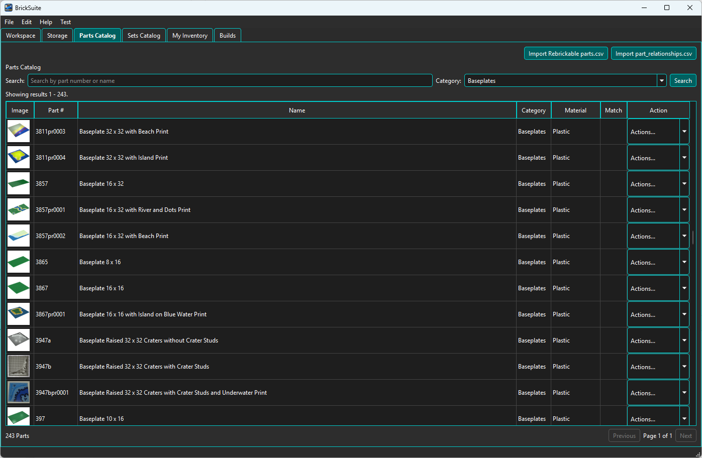
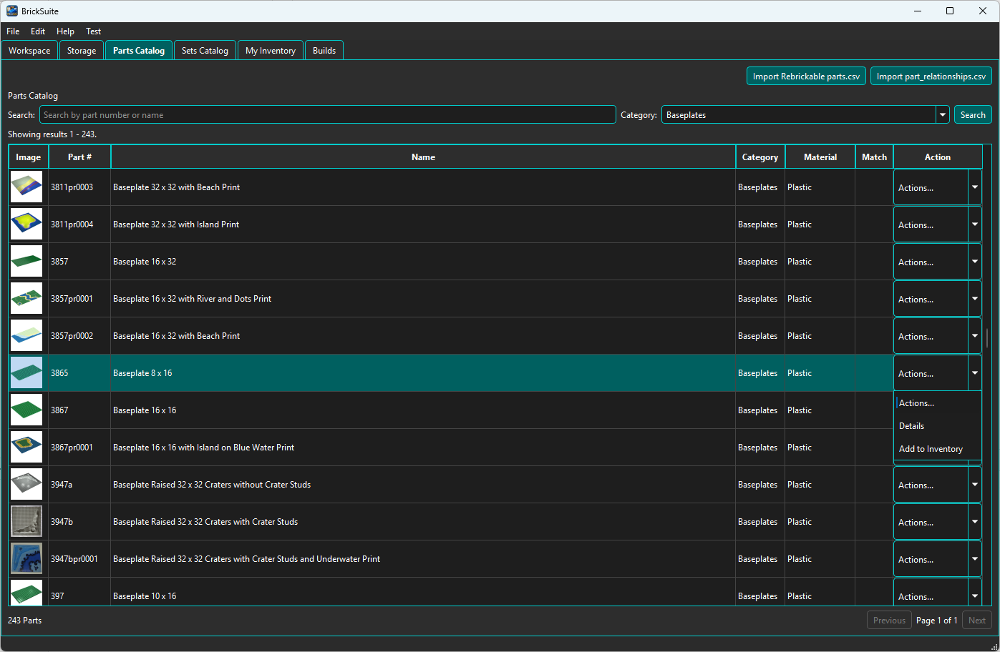
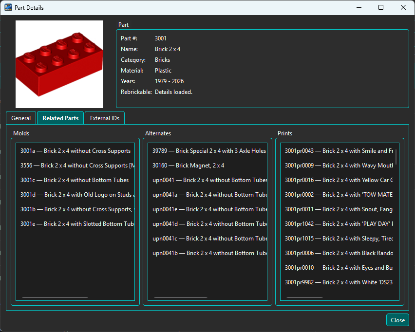

The Parts Catalog is BrickSuite's local reference catalog of part designs. It is used for catalog browsing, inventory entry, part identity resolution, Build requirements, and other workflows that need a stable local part reference.

Use the Import Rebrickable Parts (CSV/ZIP) button to populate or refresh the local Parts
Catalog from Rebrickable catalog data. Select either the downloaded ZIP archive directly or an
extracted parts.csv file. BrickSuite also finds parts.csv in a nested
archive folder.
The import adds new parts and updates changed provider data. BrickSuite does not delete an existing local part merely because it is absent from the imported CSV.
For the complete first-time setup sequence, see Quick Start.
Use the Import part_relationships.csv button to import the relationship data used by BrickSuite when interpreting supported relationships between part numbers.
See My Inventory for the Part Resolver workflow.
Use the Search field to find a part by part number or name. The Category filter can narrow results to a specific part category. Choose Search to apply the current criteria.
The results table shows the part image, part number, name, category, material, match information, and an Actions... control. The summary below the table shows the number of matching parts, and paging controls let you move through larger result sets.
The Material column shows the catalog material associated with the part when that information is available from the imported reference data.
The Match column is used by BrickSuite's part identity/mapping workflows to indicate whether relevant mapping or resolution information is available for the displayed catalog part.
Open a row's Actions... control to work with that catalog part.

Choose Details to view the current catalog and provider information for a part.

The General tab shows the part number, name, category, material, Rebrickable status, available year information, and the cached part image when one is available.
The provider link at the bottom of the dialog opens the corresponding Rebrickable part page in your system's default browser.
The Related Parts tab shows relationship information BrickSuite has for the selected part. This information comes from BrickSuite's imported relationship/reference data and supports the same identity-resolution concepts used by the Part Resolver.
The External IDs tab shows supported external part identifiers or mappings associated with the catalog part. These identifiers help BrickSuite reconcile provider-specific part numbers without treating every provider identity as a separate physical part.
Choose Add to Inventory from the row's Actions menu when you want to add loose pieces of the selected part to your Workspace. BrickSuite opens the Add Part dialog, where the current Part Resolver confirms or resolves the part identity before you choose Color, Storage, Manufacturer, Condition, Ownership, and Quantity.
See My Inventory for the full Add Part and Part Resolver workflow.
BrickSuite caches part images locally when they are available. This lets catalog and inventory views reuse an image without repeatedly requesting it from the provider.
If a color-specific image is unavailable, BrickSuite can use the more general part image where appropriate rather than repeatedly requesting an image known to be unavailable.
The Parts Catalog is reference data shared by several BrickSuite features:
Quick Start | My Inventory | Rebrickable Import | Builds | Troubleshooting